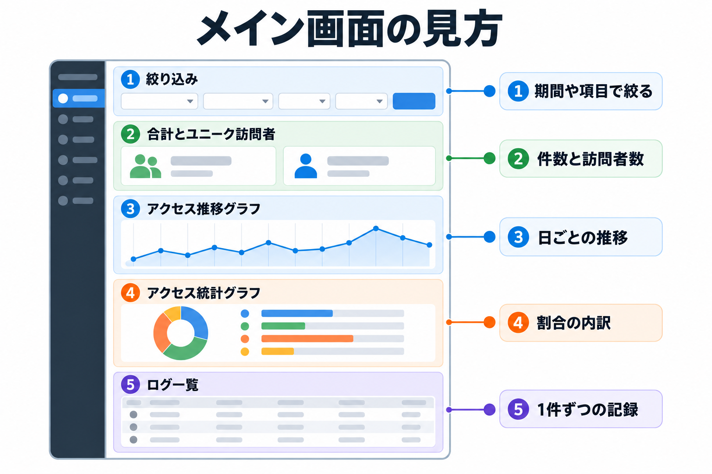
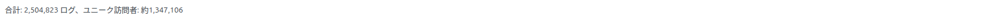

メイン画面の見方
管理画面を開くと最初に表示される「メイン」タブの全体像です。画面を 5 つの領域に分けて、それぞれ何が分かるかを説明します。

画面の地図

| 番号 | 領域 | 分かること | 詳しい説明 |
|---|---|---|---|
| ① | 絞り込み | 表示する期間や、IP アドレス・ページ・ボットかどうか等の条件を決めます。条件はこの画面のすべて（②〜⑤）に効きます。 | 絞り込み |
| ② | 合計とユニーク訪問者 | 今の条件に合うアクセスの件数と、訪問者の数。 | このページの下 |
| ③ | アクセストレンドチャート | 日ごとのアクセス数の推移と、増えているか減っているか。 | グラフの見方 |
| ④ | アクセス統計チャート | ブラウザ・国・訪問タイプ・応答の状態・参照元の割合。 | グラフの見方 |
| ⑤ | ログ一覧 | アクセスを 1 件ずつ、新しい順に 10 件ずつ表示します。訪問者のブロックもここからできます。 | ログ一覧とブロック |
合計とユニーク訪問者

「合計: N ログ、ユニーク訪問者: N」と表示されます。
| 表示 | 意味 |
|---|---|
| 合計 | 今の絞り込み条件に合うアクセスの件数です。 |
| ユニーク訪問者 | 同じ条件で、何人の訪問者がいたかです。訪問者は、ブラウザに保存した訪問者 ID（Cookie）で見分けます。訪問者 ID がない記録（Cookie を受け付けないボットなど）は、IP アドレスで見分けます。 |
| 「約」が付くとき | 期間が 32 日を超えると、ユニーク訪問者は「約 1,347,106」のように推定値になることがあります。長い期間を速く表示するための集計を使ったときで、誤差はごくわずかです。IP アドレスやページなど、文字の条件で絞り込むと、正確な数を表示します。 |
補足
初期状態では、疑わしいキーワードを含むアクセス（攻撃の試みなど）は合計・グラフ・一覧から除かれています。含めるには、絞り込みの「疑わしいアクセスを含める」をオンにします。→ 疑わしいアクセスを含める
表示が速くなるしくみ（利用者向けの説明）
ログが何百万件もあると、そのまま数えるのに時間がかかります。そこで、合計・グラフは、裏で自動的に作っている「1 時間ごとの集計」から表示します。集計は数分おきに作り足され、最後の 2 時間ほどはログから直接数えるので、いま来たアクセスもすぐ数字に反映されます。
| 条件 | 表示のされ方 |
|---|---|
| 期間・選択式の条件（ユーザー・ボット・訪問タイプ・ソース）・ステータスだけで絞り込んだとき | 集計から表示するので、長い期間でも速く表示されます。 |
| IP アドレス・リクエストパス・ユーザーエージェント・リファラー・国コード・訪問者 ID で絞り込んだとき、「過去24時間」を選んだとき | ログから直接数えます。条件によっては表示に時間がかかります。 |
おすすめ
長い期間の傾向を見るときは、まず期間と選択式の条件だけで全体をつかみ、気になるところを IP アドレスやページで絞り込むと、待ち時間を短くできます。